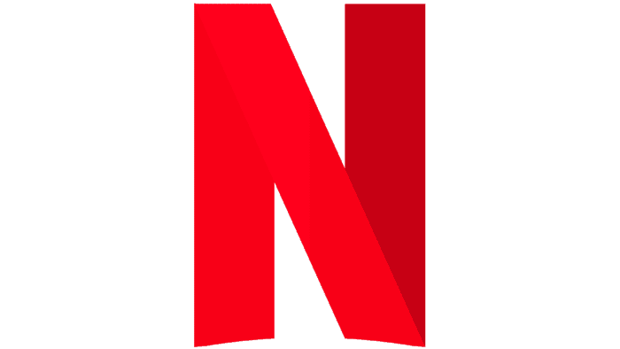

La Stratégie de Marketing de Netflix
Présentation de Netflix
Netflix, la plateforme de streaming mondialement reconnue, a révolutionné l’industrie du divertissement avec un modèle d’abonnement sans publicité. Depuis sa création en 1997, Netflix a su exploiter les données de ses utilisateurs pour personnaliser les recommandations et optimiser son contenu. Aujourd'hui, elle domine le marché mondial grâce à une stratégie de contenu original, une forte présence internationale et des partenariats avec des producteurs locaux et internationaux.
Stratégie de Marketing : Les Clés du Succès
La stratégie marketing de Netflix repose sur plusieurs axes fondamentaux :
- Le contenu original: En investissant massivement dans la production de séries et de films originaux, Netflix s’assure de la fidélisation de ses abonnés, tout en attirant de nouveaux utilisateurs grâce à des contenus exclusifs.
- La personnalisation: Grâce à l’analyse des comportements des utilisateurs, Netflix propose des recommandations personnalisées, augmentant ainsi le temps passé sur la plateforme.
- Les abonnements flexibles: Avec plusieurs niveaux d’abonnement adaptés à différents profils d’utilisateurs, Netflix reste accessible tout en maximisant ses revenus.
- L’expansion internationale: Avec une offre variée adaptée à chaque pays, Netflix est parvenu à se faire une place sur des marchés concurrentiels comme l’Inde, la Chine et l’Europe.
Citations sur Netflix :
Reed Hastings, le fondateur de Netflix, disait : “Netflix, c'est une histoire de contenu et de données. La clé de notre succès réside dans l’adaptation continue à nos utilisateurs.””
| Facteurs | Données |
|---|---|
| Investissement dans le contenu original | Plus de 17 milliards de dollars en 2020 |
| Publicité et partenariats | Partenariats avec des producteurs locaux et globaux |
| Publicité ciblée via les recommandations | |
| Expansion mondiale | |
| Abonnés en 2021 | Plus de 200 millions dans le monde |